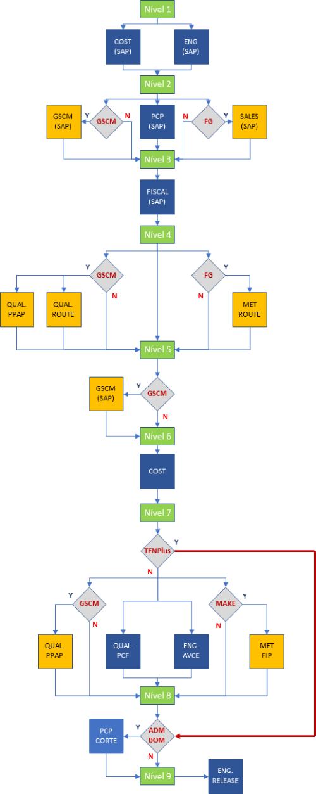

SAP A101 - TA2: Processo de liberação de Material Master.
1. Siglas do SAP/TA2:
MM: “Material Master” é o “Part Number” das peças, conjuntos ou produtos.
MCM: “Manufacturing Change Master” Documento do SAP/TA2 para a administração das atualizações dos MM na planta.
MOM2: Planta Tenneco Clean Air em Mogi Mirim/SP.
CAM1: Planta Tenneco Clean Air em Camaçari/BA.
BOM: Lista técnica dos conjuntos.
2. Fluxo das atvidades:
O fluxograma ilustrado na imagem abaixo, representa a sequencia das atividades necessárias em cada setor para que as modificação MM possam ser implementadas na manufatura, ou seja, no SAP/TA2.

| Representa o início de cada nível de aprovação. |
| Setor fixo, independe do tipo de material. |
| Setor opcional, depende do tipo de material. |
| Analise do tipo de material e status do programa. |
3. Tipo de ECM:
Nova Produção (NP): Usado para fazer a liberação de novos Materiais (Part numbers) na planta.
Autorização de modificação (ADM): Usado para liberar as modificações solicitadas nos MMs, listas técnicas ou desenhos. Para as ADM de listas técnicas existe um fluxo de aprovação especifico chamado de “ADM BOM”, onde faz se necessário fazer o controle do ponto de corte do MM a ser substituído.
4. Tipo de Material:
O tipo de material determina a origem de manufatura, assim como o nível de processamento, onde para o processo de liberação dos Materiais no SAP, precisamos apenas basear nas seguintes opções;
Produto Acabado (Fabricado): São todos os MM de produtos vendáveis.
Semiacabado (Fabricado): São os MM de conjuntos ou componentes fabricados nas dependências da fabrica da Tenneco no local onde o mesmo está sendo liberado.
GSCM (Comprados): São todos os componentes e conjuntos comprados.
5. Status do Programa:
TENPlus: Sistema de Gerenciamento de Lançamento dos novos produtos.
Series Production: São os produtos de série, já implementados na fabrica e fora do sistema TENPlus.
6. Fluxo de atividades:
DEFINIÇÃO;
6.1 Nível 1: Engenharia e Custos.
6.2 Nível 2: Engenharia e Custos.
6.3 Nível 3: Engenharia e Custos.
6.4 Nível 4: Engenharia e Custos.
6.5 Nível 5: Engenharia e Custos.
6.6 Nível 6: Engenharia e Custos.
6.7 Nível 7: Engenharia e Custos.
6.8 Nível 8: Engenharia e Custos.
6.9 Nível 9: Engenharia e Custos.